Clima do Canadá: estações do ano, neve e o que esperar em cada região
O clima canadense é uma das características que mais despertam a curiosidade de brasileiros que planejam visitar o país. Conhecido pelos invernos rigorosos em muitas regiões, o Canadá também apresenta verões quentes, paisagens coloridas no outono e uma primavera marcada pelo retorno da vegetação. Por ser o segundo maior país do mundo em área, o Canadá não tem um único padrão climático. As temperaturas e as condições do tempo variam bastante entre cidades como Toronto, Vancouver e Quebec, além das regiões montanhosas de Alberta e das áreas mais ao norte. Para quem está acostumado ao clima brasileiro, conhecer essas diferenças é essencial para escolher a época da viagem, preparar a mala e aproveitar melhor cada destino.
Inverno canadense: neve, temperaturas negativas e paisagens congeladas
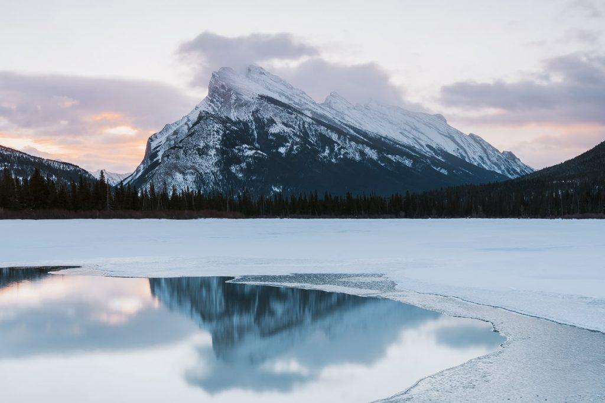
O inverno é uma das estações mais marcantes do Canadá. Em muitas regiões, as temperaturas ficam abaixo de zero, há neve acumulada nas ruas e as paisagens se transformam completamente. Em geral, o período mais frio vai de dezembro a março, embora a duração e a intensidade do inverno dependam da região.
Para quem nunca viu neve de perto, caminhar por ruas cobertas de branco, observar lagos congelados e conhecer cidades decoradas para as festas de fim de ano pode ser uma experiência inesquecível.
Entre as atividades possíveis estão esquiar, patinar no gelo, visitar mercados de Natal e fotografar paisagens nevadas. Entretanto, nem todo lugar apresenta as mesmas condições: Vancouver, por exemplo, costuma ter um inverno mais chuvoso e moderado do que Quebec ou as regiões interiores.
Quando acontece: principalmente entre dezembro e março.
Dica para viajantes: roupas térmicas, casaco de inverno, luvas, gorro e botas impermeáveis são fundamentais. Também é importante verificar as condições das estradas e a previsão do tempo antes de fazer passeios ao ar livre.
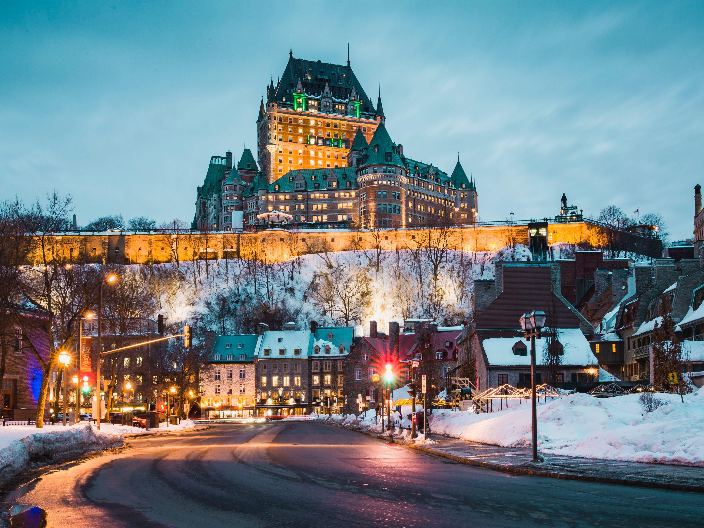
Primavera: o despertar da natureza canadense
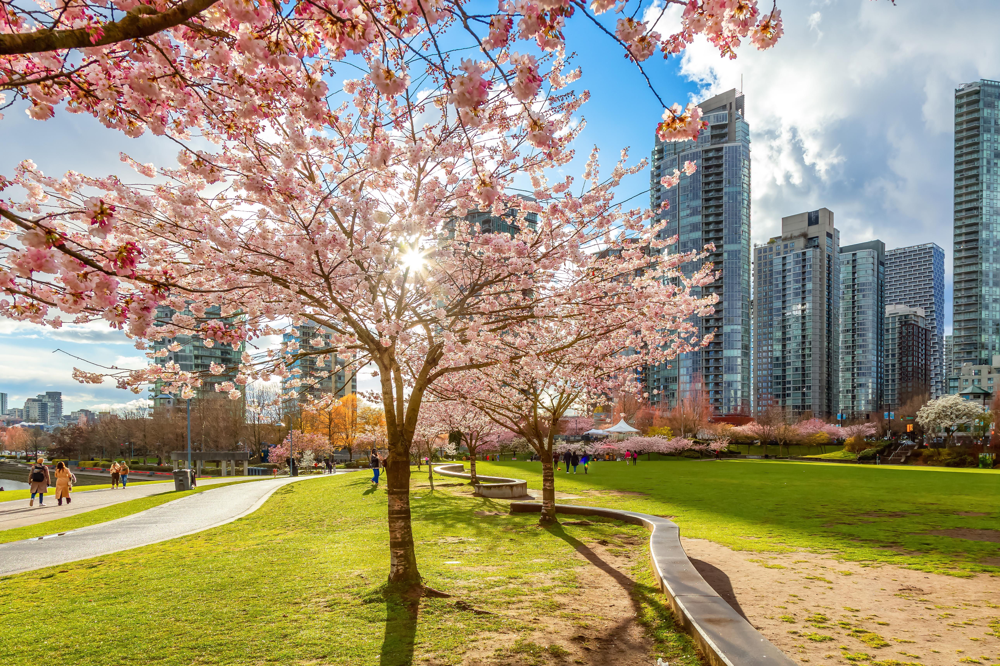
A primavera marca a transição entre o inverno e os meses mais quentes. A neve começa a derreter em muitas regiões, as árvores voltam a florescer e os parques ganham novas cores. No entanto, o aquecimento não ocorre de maneira uniforme, e algumas áreas ainda podem apresentar neve e temperaturas baixas.
No Brasil, muitas regiões não passam por uma mudança tão evidente entre inverno e primavera. No Canadá, é possível observar a transformação das paisagens após meses de frio, com flores surgindo em parques e árvores recuperando suas folhas.
Vancouver é conhecida pelas cerejeiras floridas na primavera, enquanto outras cidades oferecem jardins e espaços verdes que voltam a ganhar vida.
Quando acontece: aproximadamente de março a junho, com diferenças regionais.
Dica para viajantes: leve roupas em camadas e um casaco impermeável. A primavera pode ter dias agradáveis, mas também chuva, vento e noites frias.
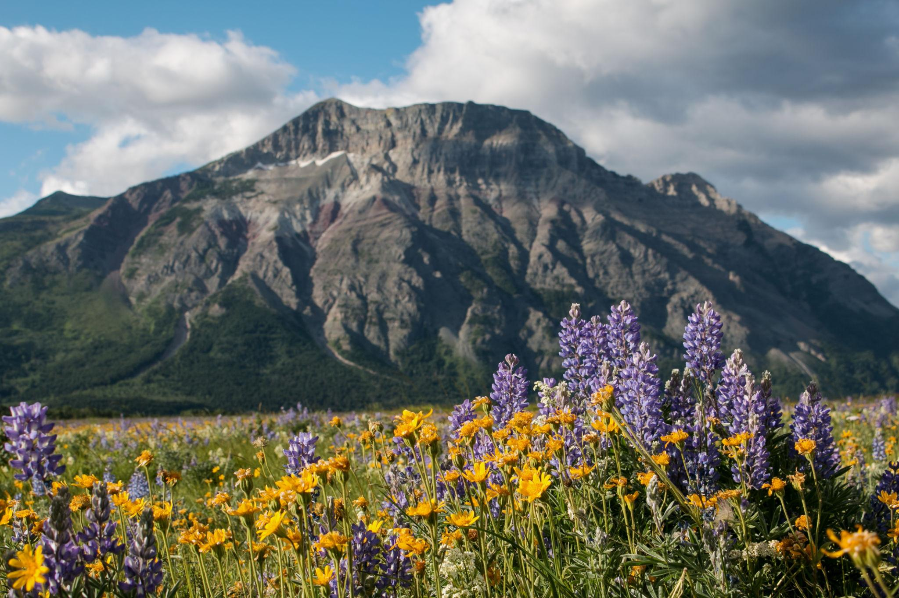
Verão: dias mais longos e atividades ao ar livre
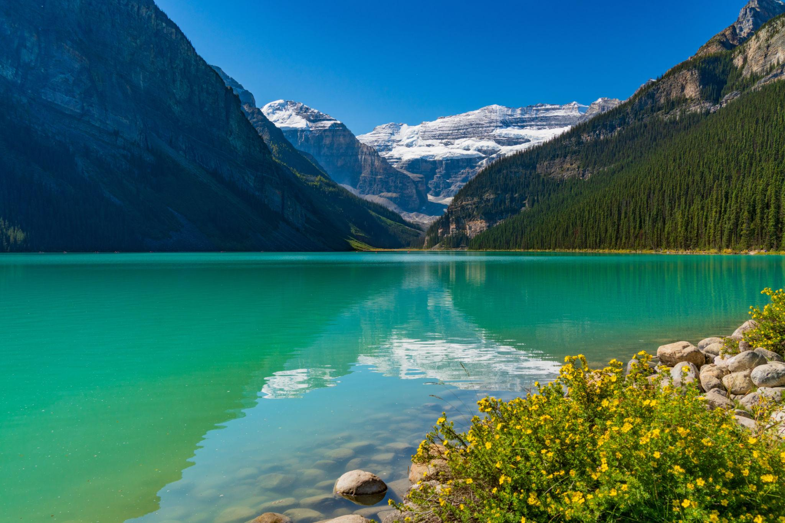
O verão canadense costuma ocorrer entre junho e setembro. Em muitas regiões do sul do país, as temperaturas diurnas ficam entre 20 °C e 30 °C, podendo ultrapassar essa faixa durante períodos de calor. Em Ontário e Quebec, a umidade pode tornar alguns dias bastante abafados.
O verão é uma ótima oportunidade para explorar parques nacionais, conhecer lagos, fazer trilhas, pedalar e aproveitar as áreas urbanas. Em lugares como Banff, os lagos e as montanhas se tornam atrações especialmente procuradas, enquanto Toronto e Vancouver oferecem festivais, passeios pela orla e atividades ao ar livre.
Para brasileiros, pode ser surpreendente descobrir que o Canadá também tem dias quentes. O país não é frio durante o ano inteiro, e algumas cidades podem apresentar temperaturas de verão semelhantes às encontradas em regiões brasileiras mais amenas.
Quando acontece: junho a setembro, com julho e agosto geralmente entre os meses mais quentes.
Dica para viajantes: leve roupas leves, protetor solar, óculos de sol e uma jaqueta para as noites mais frescas. No verão, reserve hospedagens e passeios concorridos com antecedência.
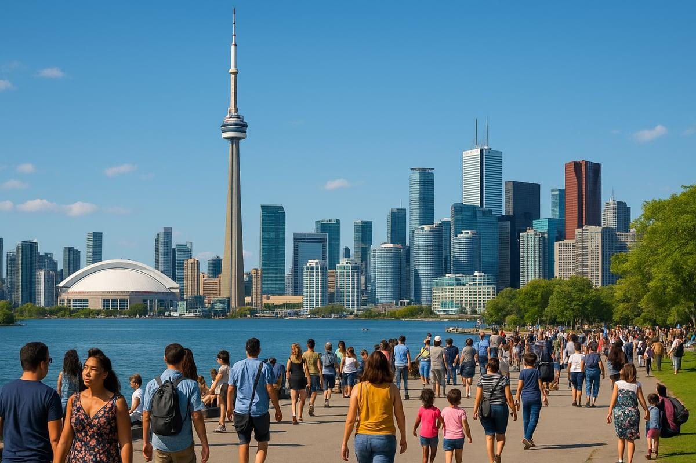
Outono: o espetáculo das folhas coloridas
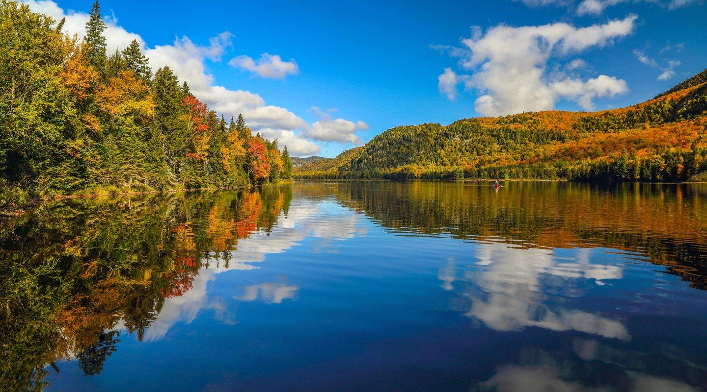
O outono é uma das estações mais fotogênicas do Canadá. As folhas de muitas árvores mudam de verde para tons de amarelo, laranja e vermelho antes de cair, criando paisagens que atraem visitantes de diferentes partes do mundo.
O fenômeno é especialmente procurado em regiões de Quebec e Ontário, embora as cores e os períodos de maior intensidade variem conforme a localização, as condições climáticas e o ano.
É também uma ótima estação para fotografar cidades históricas, lagos e parques nacionais.
Em diversas regiões do Brasil, as árvores não apresentam mudanças de cor tão intensas e generalizadas. Por isso, caminhar por parques cobertos de folhas coloridas ou percorrer estradas cercadas por florestas avermelhadas pode ser uma experiência diferente.
Quando acontece: aproximadamente de setembro a novembro. Em muitas áreas do leste canadense, as cores ficam especialmente bonitas no início ou em meados do outono, dependendo do ano.
Dica para viajantes: acompanhe os boletins locais de folhagem antes da viagem, pois o auge das cores muda de região para região. Leve roupas quentes e prepare-se para temperaturas mais baixas, principalmente pela manhã e à noite.
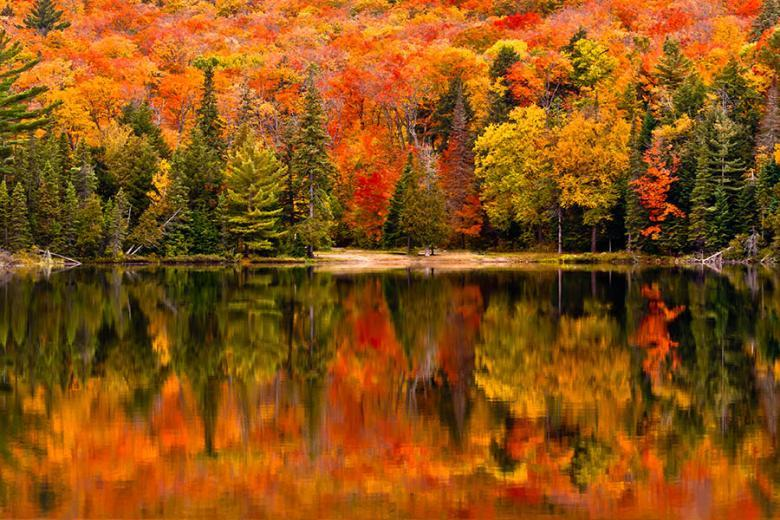
O clima muda muito de uma região para outra
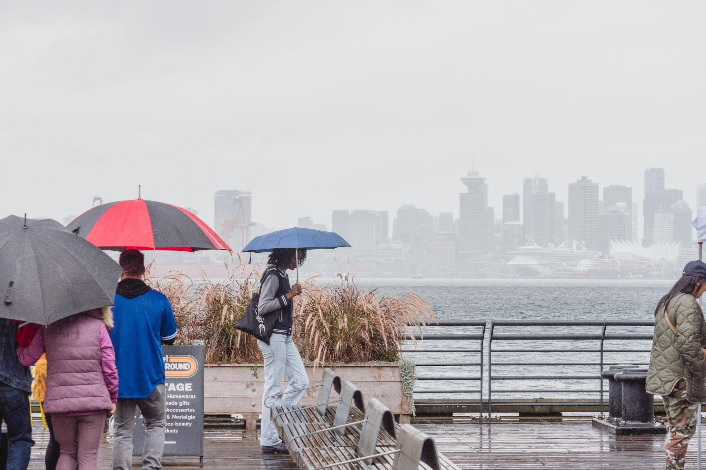
Veja algumas diferenças importantes:
- Vancouver: apresenta invernos geralmente mais amenos e chuvosos do que muitas outras regiões canadenses. A neve é possível, mas não caracteriza todo o inverno.
- Toronto: tem estações bem definidas, verões que podem ser quentes e úmidos e invernos frios, com possibilidade de neve.
- Quebec: pode apresentar invernos rigorosos, com neve e temperaturas negativas, enquanto o verão costuma ser bem mais quente.
- Banff e as Montanhas Rochosas: a altitude influencia o clima. Mesmo no verão, as temperaturas podem cair, especialmente à noite e nas áreas montanhosas.
Não basta verificar a estação do ano para decidir o que levar na mala. Uma viagem de verão a Vancouver pode exigir roupas diferentes de uma viagem às montanhas de Banff. Da mesma forma, o inverno em Quebec tende a exigir maior proteção contra o frio do que o inverno na costa de Vancouver.
Dica: consulte as normais climáticas e a previsão local antes de viajar. O serviço oficial de meteorologia canadense disponibiliza informações históricas e dados climáticos por localidade.
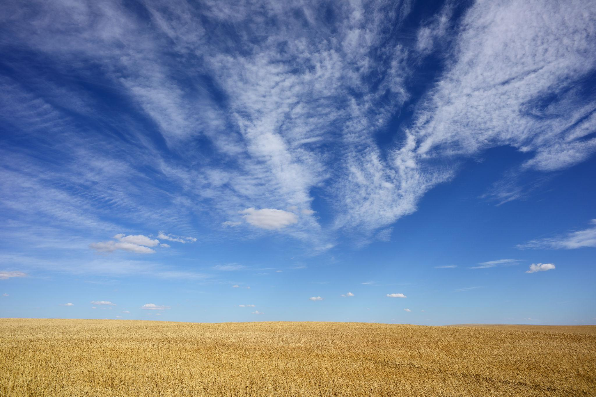
Como se vestir e preparar a mala para o Canadá
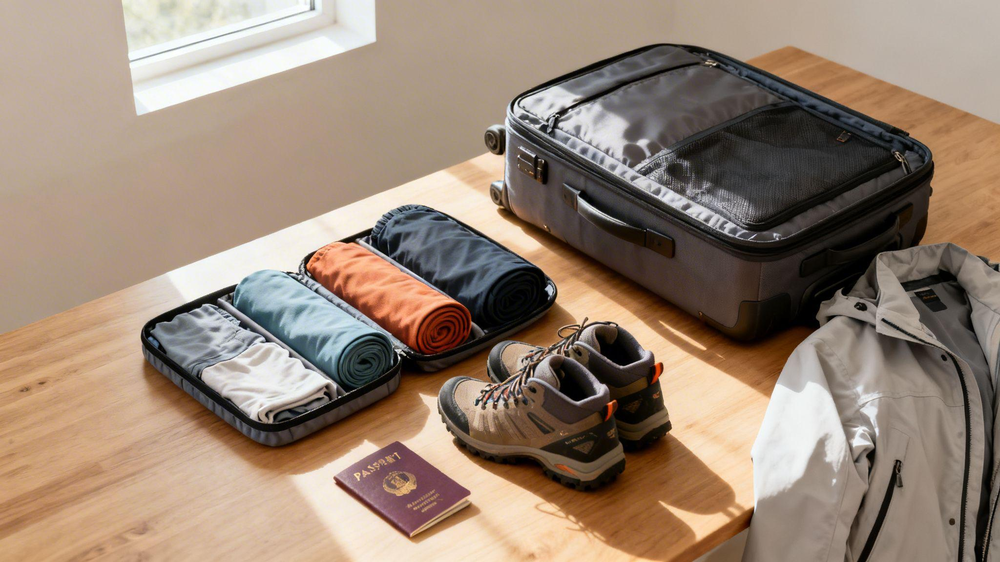
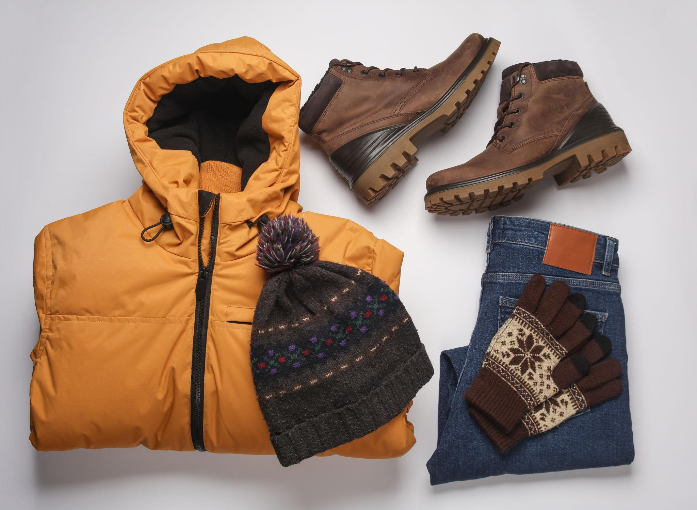
Inverno
Casaco térmico, segunda pele, luvas, gorro, cachecol e botas impermeáveis com boa aderência.
Primavera
Jaqueta impermeável, roupas em camadas, calçados confortáveis e um casaco para noites frias.
Verão
Roupas leves, tênis para caminhadas, protetor solar, óculos de sol e uma jaqueta fina.
Outono
Casacos, blusas de manga longa, calças, calçados fechados e peças adicionais para dias frios.
Preparar a mala para o Canadá exige atenção à estação, ao destino e às atividades planejadas. Para quem vem do Brasil, a principal diferença pode estar na necessidade de vestir várias camadas de roupa, especialmente durante os meses frios.
Uma dica importante: o sistema de camadas permite adaptar a roupa às mudanças de temperatura entre ambientes internos aquecidos e áreas externas frias. No inverno, a proteção contra vento e umidade também faz diferença.